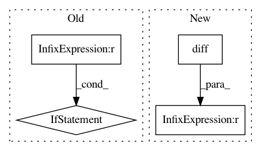

7cd15d13d91e2de78d53a5cdac661e63f64d59e8,prody/dynamics/adaptive.py,,checkConvergence,#Any#Any#,187
Before Change
target_rmsd = kwargs.get("target_rmsd", 1.0)
cutoff = kwargs.get("cutoff", 15)
if min_rmsd_diff is not None:
if rmsds[-2] - rmsds[-1] < min_rmsd_diff:
LOGGER.warn(
"The RMSD decrease fell below {0}".format(min_rmsd_diff))
return True
if rmsds[-1] < target_rmsd:
LOGGER.warn("The RMSD fell below target RMSD {0}".format(target_rmsd))
return True
After Change
cutoff = kwargs.get("cutoff", 15)
if len(rmsds) > 4:
drmsd = np.abs(np.diff(rmsds))
if np.all(drmsd[-4:] < min_rmsd_diff):
LOGGER.warn(
"The RMSD decrease fell below {0}".format(min_rmsd_diff))
return True
In pattern: SUPERPATTERN
Frequency: 3
Non-data size: 4
Instances
Project Name: prody/ProDy
Commit Name: 7cd15d13d91e2de78d53a5cdac661e63f64d59e8
Time: 2021-01-05
Author: shz66@pitt.edu
File Name: prody/dynamics/adaptive.py
Class Name:
Method Name: checkConvergence
Project Name: scipy/scipy
Commit Name: 1af61eee76fc63e98ba5ad85ad82fbd18111b8e9
Time: 2014-01-28
Author: joel.nothman@gmail.com
File Name: scipy/sparse/data.py
Class Name: _minmax_mixin
Method Name: _min_or_max_axis
Project Name: QUANTAXIS/QUANTAXIS
Commit Name: db8c28ab1da08c4274c25b3ef1e13afd8523408b
Time: 2018-05-21
Author: yutiansut@qq.com
File Name: QUANTAXIS/QAIndicator/base.py
Class Name:
Method Name: CROSS